측량및지형공간정보기사 (2015-03-08 기출문제)
1과목: 측지학 및 위성측위시스템
1. 중력이상의 주된 원인이 되는 것은?
- 지하물질의 밀도 분포
- 대기의 대류 현상
- 태양과 달의 인력
- 지구의 공전 운동
(정답률: 84%)

2. 임의 지점에서 GPS 관측을 수행하여 타원체고(h) 59.543m를 획득하였다. 그 지점의 지구중력장 모델로부터 계산한 지오이드고 (N)가 2.309m 이었다면 정표고(H)는?
- -61.852m
- -57.234m
- 57.234m
- 61.852m
(정답률: 65%)
3. 다음 중 지구의 공전으로 인하여 발생하는 현상이 아닌 것은?
- 계절의 변화
- 일조 시간의 변화
- 태양 남중고도의 변화
- 인공위성의 궤도가 서편하는 현상
(정답률: 71%)
4. GPS 시에 대한 설명으로 옳지 않은 것은?
- GPS 시는 위성에 탑재된 원자시계가 나타내는 시각이다.
- GPS 시와 UTC의 차이는 윤초의 삽입으로 증가한다.
- GPS 시는 1980년 1월 6일 0시 UTC로부터 시작하였다.
- GPS 시는 국제원자시와 정확하게 일치한다.
(정답률: 78%)
5. 다음 중 표고를 결정하기 위해 수행하여야 하는 측량으로 짝지어진 것은?
- 다각측량, 중력측량
- 수준측량, 중력측량
- 수준측량, 지자기측량
- 다각측량, 지자기측량
(정답률: 77%)
6. 지구의 반지름이 6400㎞인 구(球)라고 가정했을 때 위도 30°, 경도 60°, 높이(h) 0m인 지점의 지심직각좌표계 상 좌표값 중 z 좌표는? (단 지구의 회전축을 z 축으로 한다.)
- 2520㎞
- 3200㎞
- 5217㎞
- 6400㎞
(정답률: 58%)
7. 중력보정 중 관측점을 중심으로 지형이 높은 곳은 깎고 낮은 곳은 채워서 평탄하게 했을 때의 값으로 보정하는 것은?
- 지형보정
- 고도보정
- 부게보정
- 아이소스타시보정
(정답률: 64%)
8. 어느 구면 삼각형에서 구과량이 30″이었다. 이 구면 삼각형의 면적이 0.355m2 이라면 구의 반지름은?
- 39.8m
- 42.3m
- 49.4m
- 60.0m
(정답률: 60%)
9. 서편각이 +30°인 어느 지점에서 나침반의 자침이 그림과 같을 때 진북방향각을 가리키는 것은?
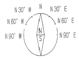
- N60°W
- N30°W
- N30°E
- N60°E
(정답률: 71%)
10. 다음 중 DGPS에 의해서 보정되지 않는 오차는?
- 전리층 지연 오차
- 위성시계오차
- 사이클 슬립
- 위성궤도오차
(정답률: 75%)
11. GPS 위성의 궤도를 계산하기 위한 궤도정보에 포함되지 않는 것은?
- 궤도의 장반경
- 궤도의 경사각
- 궤도의 원지점 인수
- 궤도의 승교점 적경
(정답률: 60%)
12. 다음의 GPS를 이용한 측량방법 중 가장 정밀한 위치결정 방법으로 기준점측량이나 학술목적으로 주로 사용되는 방법은?
- 정지(Static) 측량
- 이동(Kinematic) 측량
- 네트워크 RTK(Real Time Kinematic) 측량
- RTK(Real Time Kinematic) 측량
(정답률: 80%)
13. GPS 오차원인 중 L1 신호와 L2 신호의 굴절 비율이 상이함을 이용하여 L1/L2의 선형 조합을 통해 보정이 가능한 것은?
- 전리층 지연 오차
- 위성시계오차
- GPS 안테나의 구심오차
- 다중경로오차
(정답률: 71%)
14. 현재 운용중인 GPS에서 사용할 수 있는 수신자료가 아닌 것은?
- C/A
- L1
- L2
- E6
(정답률: 83%)
15. 지구좌표계에 관한 설명으로 옳지 않은 것은?
- 경위도좌표계는 지구상의 절대적 위치를 표시하는데 일반적으로 널리 사용되는 곡면상의 좌표계이다.
- 평면직교좌표계란 측량범위가 크지 않은 일반적인 측량에 많이 이용되는 좌표계이다.
- UTM (Universal Transverse Mercator) 좌표계는 적도를 종축, 지구 자전축을 횡축으로 하며 지구를 회전테원체로 보고 지구전체를 위도 6°씩 60개의 구역, 경도 8°씩 20개의 구역으로 나눈다.
- UPS (Universal Polar Stereographic) 좌표계는 UTM 좌표 체계를 적용할 수 없는 극지방의 위치관계를 나타내기 위하여 만들어진 좌표계이다.
(정답률: 68%)
16. 지자기측량에서 필요한 보정이 아닌 것은?
- 지자기장의 일변화 및 기계오차에 의한 보정
- 태양 고도각 보정
- 기준점 보정
- 온도 보정
(정답률: 56%)
17. 다음 중 VLBI 에 대한 설명으로 틀린 것은?
- 전파간섭계를 이용한 것으로 전파망원경의 거리가 가까울수록 좋은 공간해상도를 갖는다.
- 공간해상도는 두 물체를 분리하여 볼 수 있는 최소각을 의미한다.
- 일반적으로 수백㎞ 이상의 범위에서 직접 측정이 유효하다.
- 높은 정확도를 가지며 정밀측량, 지각변동의 관측 등을 목적으로 이용된다.
(정답률: 48%)
18. 통합기준점 설치를 위한 GPS 기준점 측량 시 연속 관측 시간은?
- 2시간
- 4시간
- 6시간
- 8시간
(정답률: 63%)
19. 다음 중 GPS 다중경로 오차를 줄이기 위한 측량 방법으로 거리가 먼 것은?
- 이중주파수 수신기를 설치한다.
- 관측시간을 길게 설정한다.
- 오차 요인을 가진 장소를 피해 안테나를 설치한다.
- 각 위성 신호에 대하여 칼만 필터를 적용한다.
(정답률: 52%)
20. 지오이드(geoid)에 대한 설명으로 틀린 것은?
- 지오이드는 중력장이론에 따라 물리적으로 정의한다.
- 지오이드는 장기간에 걸쳐 조금씩 변화한다.
- 모든 지점에서 지구타원체의 수직선과 지오이드의 연직선은 일치한다.
- 일반적으로 육지에서의 지오이드면은 지구타원체면보다 높다.
(정답률: 70%)
2과목: 응용측량
21. 클로소이드에 관한 설명 중 틀린 것은?
- 클로소이드는 곡률이 곡선의 길이에 비례하는 곡선이다.
- 클로소이드는 주로 철도의 완화곡선으로 사용된다.
- 클로소이드는 나선의 일종이다.
- 모든 클로소이드는 닮은꼴이다.
(정답률: 67%)
22. 터널측량에 대한 설명으로 옳지 않은 것은?
- 터널 내의 곡선설치는 일반적으로 지상에서와 같이 편각법에 의해 행한다.
- 터널 내 측량에는 터널 내 중심선측량과 터널 내 수준측량으로 나눌 수 있다.
- 터널의 중심선측량은 삼각측량 또는 트래버스 측량으로 행한다.
- 터널 내 측량에서는 기계의 십자선 및 표척 등에 조명이 필요하다.
(정답률: 68%)
23. 터널 내에서 차량 등에 의하여 파손되지 않도록 콘크리트 등을 이용하여 만든 중심말뚝을 무엇이라 하는가?
- 도갱(導坑)
- 레벨(level)
- 자이로(gyro)
- 도벨(dowel)
(정답률: 67%)
24. 그림과 같은 도로건설의 절취단면 면적은?
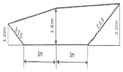
- 13.95m2
- 15.95m2
- 16.95m2
- 17.95m2
(정답률: 52%)
25. 사다리꼴 토지의 밑변 AD에 평핸한 직선 PP'에 의해 면적을 2등분 (m : n = 1 : 1)하고자 할 때 PP'의 거리는?
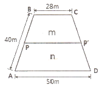
- 37.0m
- 38.7m
- 40.5m
- 42.5m
(정답률: 35%)
26. 도로의 종단면도에 기입하는 사항이 아닌 것은?
- 추가말뚝의 추가거리, 측점간의 거리
- 계획고, 지반고
- 절ㆍ성토고, 계획선의 경사
- 절ㆍ성토 단면적, 절ㆍ성토량
(정답률: 51%)
27. 하천의 유속측정을 위하여 그림과 같이 표면부자를 수면에 띄우고 A점을 출발하여 B점을 통과하는데 소요되는 시간은 2분 20초이었다. AB 두 점 사이의 거리가 20.5m 일 때 유속은? (단, 큰 하천에 대한 보정계수는 0.9임)
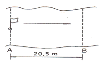
- 0.113m/s
- 0.132m/s
- 0.146m/s
- 0.163m/s
(정답률: 53%)
28. 다음 수로측량의 기준에 대한 설명으로 틀린 것은?
- 좌표계는 세계측지계를 사용한다.
- 수심은 기본수준면으로부터의 깊이로 표시한다.
- 해안선은 해면이 약최저저조면에 달하였을 때의 육지와 해면과의 경계로 표시한다.
- 투영법은 국제횡마르카토르도법(UTM)을 원칙으로 한다.
(정답률: 62%)
29. 경관의 구성요소에서 인간의 속성을 나타내는 직업, 연령, 건강상태, 교육환경이 속하는 계는?
- 대상계
- 경관장계
- 시점계
- 형상계
(정답률: 45%)
30. 터널측량의 일반적인 작업공정 순서로 옳은 것은?
- 지형측량 - 터널 외 기준점 측량 - 세부측량 - 터널 내 측량 - 준공측량
- 세부측량 - 터널 외 기준점 측량 - 터널 내 측량 - 지형측량 - 준공측량
- 지형측량 - 세부측량 - 터널 외 기준점 측량 - 터널 내 측량 - 준공측량
- 세부측량 - 터널 내 측량 - 지형측량 - 준공측량 - 터널 외기준점 측량
(정답률: 57%)
31. 그림과 같이 200㎜ 하수관을 묻었을 때 측점 A의 관저계획고는 53.16m 이고, AB 구간의 설치 기울기는 1/200, BC 구간의 설치 기울기는 1/250 일 때, 측점 C의 관저계획고는?
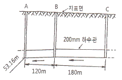
- 54.35m
- 54.48m
- 54.51m
- 54.54m
(정답률: 46%)
32. 토털스테이션(total station)을 이용한 단곡선 설치에 있어서 가장 널리 사용되는 편리한 방법은?
- 좌표법
- 중앙종거법
- 지거설치법
- 종거에 의한 설치법
(정답률: 62%)
33. 교각 60°, 곡선반지름 150m인 단곡선을 설치할 때 직선과 원곡선 사이에 완화곡선을 설치하면 완화곡선의 길이는?(단, 완화곡선의 매개변수는 120m 이다.)
- 5.3m
- 53m
- 9.6m
- 96m
(정답률: 48%)
34. 체적측량에 있어서 관측된 수평 및 수직거리 x, y, z의 거리오차 를 dx, dy, dz 라 하고 거리관측의 정확도가 k로 동일하다고 할때, 다음 중 체적관측의 정확도는?
- 1/3K
- 1K
- 3K
- 9K
(정답률: 63%)
35. 노선측량에서 곡선을 설치할 때 가장 먼저 결정하여야 할 것은?
- T.L. (접선길이)
- C.L. (곡선길이)
- B.C. (곡선시점)
- R (곡선반지름)
(정답률: 65%)
36. 하천의 유속측정에 있어서 수면으로부터 수심(H)의 0.2H, 0.6H, 0.8H인 지점의 유속이 각각 12.783m/s, 12.863m/s, 12.821m/s일 때 3점법에 의한 평균유속은?
- 12.321m/s
- 12.421m/s
- 12.833m/s
- 12.933m/s
(정답률: 58%)
37. 수애선(水涯線) 및 수애선 측량에 관한 설명으로 옳지 않은 것은?
- 심천측량에 의한 방법을 이용할 때에는 수위의 변화가 적은 시기에 심천측량을 행하여 하천의 횡ㆍ단면도를 먼저 만든다.
- 수애선은 하천 수위에 따라 변동하는 것으로 최저수위에 의하여 정해진다.
- 수면과 하안과의 경계선을 수애선이라 한다.
- 수애선 측량에는 심천측량에 의한 방법과 동시관측에 의한 방법이 있다.
(정답률: 60%)
38. 하천측량에서 합류점, 분류점이나 만곡이 심한 장소로 높은 정확도가 요구되는 곳의 삼각망 구성으로 가장 좋은 것은?
- 유심삼각망
- 단열삼각망
- 단삼각망
- 사변형삼각망
(정답률: 68%)
39. 삼각형 ABC의 좌표가 표와 같을 때 토지의 면적은?
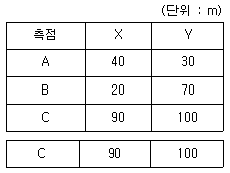
- 4700m2
- 3700m2
- 2700m2
- 1700m2
(정답률: 45%)
40. 캔트가 C인 노선의 곡선부에서 속도와 반지름을 모두 3배로 할때 변화된 캔트는?
- C/3
- 1.5C
- 3C
- 9C
(정답률: 69%)
3과목: 사진측량 및 원격탐사
41. 사진의 축척을 일치시키고 경사에 의한 변위를 수정하여 제작한 사진지도 중 등고선이 삽입되지 않은 사진지도는?
- 정사투영 사진지도
- 중심투영 사진지도
- 약집성 사진지도
- 조정집성 사진지도
(정답률: 47%)
42. 위성영상 중 지표면의 온도분포를 분석할 수 있는 것은?
- Landsat 위성의 TM 영상
- Landsat 위성의 RBV 영상
- SPOT 위성의 HRV 영상
- 아리랑 위성의 EOC 영상
(정답률: 60%)
43. 다음 중 상업용 위성으로 1m의 공간해상도를 갖는 위성은?
- KOMPSAT - 1
- IKONOS
- SPOT - 5
- LANDSAT
(정답률: 54%)
44. 공간해상도가 높은 영상을 이용하여 해상도가 낮은 영상의 해상도를 높이는 기법은?
- 영상 융합
- 영상 모자이크
- 영상 피라미드
- 영상 기하 보정
(정답률: 62%)
45. 인공위성을 이용한 원격탐사의 특징으로 틀린 것은?
- 다중 파장대에 의한 지구 표면의 정보획득이 용이하다.
- 회전주기가 일정하므로 원하는 지점 및 시기에 관측하기 쉽다.
- 짧은 시간 내에 넓은 지역을 동시에 관측할 수 있으며, 반복 관측이 가능하다.
- 관측이 좁은 시야각으로 행하여지므로 얻어진 영상은 정사투영에 가깝다.
(정답률: 58%)
46. 초점거리 200㎜의 카메라로 지상에서 한 변의 길이가 30㎝인 대공표지를 사진 상에서 30μm 이상의 크기로 나타나게 하고자 할 때, 한계비행고도는?
- 1500m
- 1700m
- 2000m
- 2500m
(정답률: 47%)
47. 초점거리 210㎜인 카메라로 평지를 촬영하였을 때 주점기선의 길이가 73㎜ 이었다. 인접사진과의 종중복도는? (단, 사진의 크기는 23㎝×23㎝ 이다.)
- 76%
- 68%
- 53%
- 48%
(정답률: 57%)
48. 상호표정요소를 계산하기 위하여 측정하여야 할 공액점의 최소 개수는?
- 2개
- 3개
- 4개
- 5개
(정답률: 52%)
49. 기복변위에 대한 설명으로 틀린 것은?
- 중심투영의 성질 때문에 생긴다.
- 변위량은 촬영고도에 반비례한다.
- 변위량은 지형지물의 비고에 반비례한다.
- 변위량은 사진주점에서 상이 생기는 거리에 비례한다.
(정답률: 56%)
50. 사진측량의 내부표정에 사용 가능한 방법은?
- 3차원 상사변환 (3-dimensional similarity transformation)
- 의사부등각사상변환 (pseudo affine transformation)
- 공면조건 (coplanarity condition)
- 공선조건 (collinearity condition)
(정답률: 41%)
51. 평탄지를 축척 1:20000로 촬영한 연직사진이 있다. 촬영에 사용한 카메라의 초점거리가 15㎝, 사진의 크기가 23㎝×23㎝, 종중복도 60% 일 때 기선고도비는?
- 0.51
- 0.61
- 0.71
- 0.81
(정답률: 54%)
52. 항공사진 촬영에 대한 설명으로 옳지 않은 것은?
- 고층 빌딩이 많은 지역에서는 종중복도를 감소시킨다.
- 산악지 같은 지형의 상은 왜곡되어 찍힌다.
- 촬영 각도가 기울어지면 같은 사진 내에서도 축척이 일정하지 않다.
- 주점, 연직점, 등각점의 특수 3점이 있다.
(정답률: 61%)
53. 사진의 주점(principal point)을 계산하기 위하여 직접적으로 이용되는 것은?
- 사진지표
- 초점거리
- 노출중심
- 사진의 번호
(정답률: 57%)
54. 초점거리 150㎜ 카메라로 촬영고도 1800m, 촬영기선장 960m로 연직촬영한 입체모델이 있다. A점의 시차를 관측한 결과 기준면(표고 0m)의 시차보다 10㎜ 더 크게 관측되었다면, 엄밀계산법으로 구한 A점의 표고는?
- 150m
- 175m
- 200m
- 225m
(정답률: 32%)
55. 항공사진은 어떤 투영에 의한 지형ㆍ지물의 상인가?
- 중심투영
- 등적투영
- 평행투영
- 정사투영
(정답률: 58%)
56. 절대표정 (또는 대지표정)이 완전히 끝났을 때 사진모델과 실제지형의 관계로 옳은 것은?
- 합동
- 상사
- 상반
- 일치
(정답률: 55%)
57. 상호표정에 사용하는 요소가 아닌 것은?
- λ (축척계수)
- κ (Z축에 대한 회전)
- φ (Y축에 대한 회전)
- ω (X축에 대한 회전)
(정답률: 56%)
58. 위성영상처리 과정 중 전처리(preprocessing)에 속하는 것은?
- 수치지형모델(DTM) 생성 및 지도제작
- 영상분류와 판독
- 방사보정과 대기보정
- 영상자료 전송 및 압축
(정답률: 51%)
59. 항공사진 측량시 표정기준점(또는 지상기준점)의 선정 조건으로 틀린 것은?
- 사진 상의 명료한 점
- 상공에서 보이느 점
- 시간적인 변화가 없는 점
- 경사변환선 상의 점 또는 가상점
(정답률: 59%)
60. 위성영상의 영상분류(image classification)에 대한 설명으로 옳은 것은?
- 위성영상의 질(quality)을 표준화하여 등급을 정하는 것이다.
- 영상향상(image enhancement)을 위한 전처리 과정에 적용된다.
- 다양한 위성영상들을 좌표계에 맞추어 구역별로 나누는 것이다.
- 무감독 분류에서는 사전학습자료(training data)를 이용하지 않는다.
(정답률: 42%)
4과목: 지리정보시스템
61. 다음 중 위상정보에 관한 설명으로 틀린 것은?
- 공간상에 존재하는 공간객체의 길이, 면적 등의 계산을 가능하게 한다.
- 공간객체 형태(Shape)에 관한 정보만을 제공하므로 제반 분석을 매우 빠르게 한다.
- 공간상에 존재하는 객체의 형태(Shape), 인접성, 연결성에 관한 정보를 제공한다.
- 다양한 공간분석을 가능하게 한다.
(정답률: 60%)
62. 아래 두 테이블을 합집합(union)한 결과로 옳은 것은?
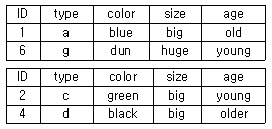
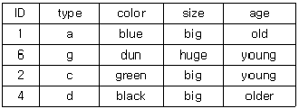
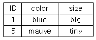
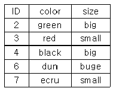
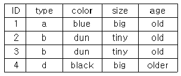
(정답률: 69%)
63. 벡터(Vector)방식의 데이터 모형에 대한 설명으로 틀린 것은?
- 위치를 표시하기 위해 불연속적인 선이나 점을 이용한다.
- 벡터 모형의 모든 객체는 수학적 위치값을 갖는다.
- 대상물들은 점, 선, 면 요소로 형성된다.
- 대상 지역 모든 곳의 정보를 담고 있다.
(정답률: 50%)
64. 공간분석 기능 중 하나인 네트워크 분석(network analysis)을 이용한 분석과 가장 거리가 먼 것은?
- 지형 분석
- 자원할당 분석
- 접근성 분석
- 최단경로 분석
(정답률: 53%)
65. 지리정보시스템(GIS)의 분석기능 중 버퍼분석(Buffer Analysis)에 대한 설명으로 옳은 것은?
- 점, 선 또는 면형에서 일정거리 안의 지역을 둘러싸는 폴리곤 구역을 생성하는 기법이다.
- 서로 다른 여러 개의 레이어로부터 도형자료나 속성자료를 추출하기 위한 기법이다.
- 상호 연결된 선형의 객체를 이용하여 최적 경로 계산을 위한 기법이다.
- 유역분석, 가시권 분석, 3차원 가시화에 사용되는 기법이다.
(정답률: 49%)
66. GIS의 응용기법 중 하나로써 공간상에 나타난 연속적인 기복의 변화를 수치적으로 표현하는 방법은?
- DXF
- FM
- DEM
- AM
(정답률: 71%)
67. 지리정보시스템(GIS) 자료를 도형자료와 속성자료로 구분할 때, 도형자료에 해당되는 것은?
- 관거 재질
- 관거 형상
- 관거 매설 년도
- 관거 관리 이력
(정답률: 70%)
68. 독도를 대축척 수치지형도로 제작할 경우 적용하여야 하는 우리나라 평면직각좌표계 원점은?
- 38° N, 125° E
- 38° N, 127 E
- 38° N, 129 E
- 38° N, 131° E
(정답률: 58%)
69. 수치지도 제작에 사용되는 용어에 대한 설명으로 틀린 것은?
- 도곽이라 함은 일정한 크기에 따라 분할된 지도의 가장자리에 그려진 경계선을 말한다.
- 좌표라 함은 좌표계 상에서 지형ㆍ지물의 위치를 수학적으로 나타낸 값을 말한다.
- 수치지도작성이라 함은 각종 지형공간정보를 취득하여 전산시스템에서 처리 할 수 있는 형태로 제작 또는 변환하는 일련의 과정을 말한다.
- 메타데이터(metadata)라 함은 작성된 수치지도의 결과가 목적에 부합하는지 여부를 판단하는 기준 데이터를 말한다.
(정답률: 61%)
70. 다음 중 수치표고모델(DEM : Digital Elevation Model)의 제작 방법으로 거리가 먼 것은?
- SAR (Synthetic Aperture Radar)를 이용한 방법
- 항공사진측량에 의한 방법
- 라이다(LiDAR) 자료를 이용한 방법
- 초분광 영상(Hyperspectral Image)을 이용한 방법
(정답률: 46%)
71. 지리저보시스템(GIS)의 자료처리 단게를 순서대로 바르게 표시한 것은?
- 자료의 수치화 - 자료조작 및 관리 - 응용분석 - 출력
- 자료조작 및 관리 - 자료의 수치화 - 응용분석 - 출력
- 자료의 수치화 - 응용분석 - 자료조작 및 관리 - 출력
- 자료조작 및 관리 - 응용분석 - 자료의 수치화 - 출력
(정답률: 63%)
72. 래스터 자료의 보간법 중 최근린보간법(nearest neighbor)에 대한 설명으로 틀린 것은?
- 자료값 중 최대값과 최소값이 손실되지 않는다.
- 다른 보간법에 비해 계산속도가 빠르다.
- 원래의 자료값을 평균하거나 변환하지 않고 그대로 이용한다.
- 가장 가까운 4개의 기지값의 거리에 따라 경중률을 계산한다.
(정답률: 40%)
73. 지리정보시스템(GIS)에서 분산처리시스템의 장점과 거리가 먼 것은? ]
- 연산속도 향상
- 자원공유
- 효율성
- 창조성
(정답률: 68%)
74. 단순한 tree 구조를 가지고 있으며 데이터의 갱신은 쉽지만 검색 과정이 폐쇄적인 데이터베이스는?
- 객체지향형 데이터베이스
- 네트워크형 데이터베이스
- 계층형 데이터베이스
- 관계형 데이터베이스
(정답률: 58%)
75. 불규칙삼각망(TIN : Triangulated Irregular Network)에 대한 설명으로 옳지 않은 것은?
- TIN은 불규칙한 3차원 점들을 삼각형으로 연결하여 지형을 표현한 곳이다.
- 수치지도의 등고선 자료로부터 TIN을 만들 수 있다.
- 격자 형태로 고도를 표현하는 수치모형이다.
- TIN은 벡터구조로서 위상관계를 갖는다.
(정답률: 58%)
76. 그림은 6×6 화소 크기로 래스터데이터를 수치적으로 표현한 것이다. 이 데이터를 중간값(Median Method)을 사용하여 2×2 화소 크기의 데이터로 만든 결과로 옳은 것은?
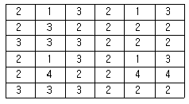
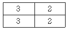
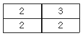
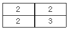
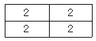
(정답률: 68%)
77. 다음은 지리정보시스템(GIS)의 구성요소 중 무엇에 대한 설명인가?
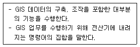
- 소프트웨어
- 하드웨어
- 네트워크
- 자료
(정답률: 69%)
78. 그림은 셀에 대한 국소저항값이다. 보기에서 음영 표시한 셀에서 국소저항이 5인 셀로 이동할 때의 최소비용경로는?(오류 신고가 접수된 문제입니다. 반드시 정답과 해설을 확인하시기 바랍니다.)
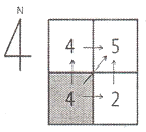
- →N→E
- →E→N
- →NE
- →NW
(정답률: 61%)
79. 지형을 저장하고 표현할 수 있는 데이터 구조 중 라이다(LiDAR) 원시 자료의 구조를 설명하고 있는 것은?
- 점(Point) 위치에 대해 데이터 값을 기록
- 불규칙삼각망(TIN)
- 수치표고모델
- 등고선
(정답률: 43%)
80. 공간데이터의 중처분석에서 음영부분(A+B+C=)의 특성을 맞게 설명한 것은?
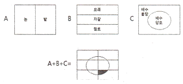
- 모래질 밭이며 배수가 불량한 지역
- 점토질 밭이며 배수가 양호한 지역
- 자갈인 밭이며 배수가 양호한 지역
- 점토질 밭이며 배수가 불량한 지역
(정답률: 75%)
5과목: 측량학
81. 삼각점간 거리가 3㎞일 때 관측한 수평각의 허용오차를 3″까지구한다면 관측점 및 시준점의 편심을 고려하지 않아도 되는 한도는?
- 2.1㎝
- 2.3㎝
- 4.4㎝
- 8.7㎝
(정답률: 41%)
82. 축척과 도면의 크기에 대한 설명으로 옳은 것은?
- 축척 1 : 500 도면을 축척 1:1000으로 축소하였을 때 도면의 크기는 2배가 된다.
- 축척 1 : 600 도면을 축척 1:200으로 확대하였을 때 도면의 크기는 1/3배가 된다.
- 축척 1 : 600 도면을 축척 1:300으로 확대하였을 때 도면의 크기는 2배가 된다.
- 축척 1 : 500 도면을 축척 1:1000으로 축소하였을 때 도면의 크기는 1/4배가 된다.
(정답률: 64%)
83. 등고선에 대한 설명으로 틀린 것은?
- 등고선은 절벽, 동국과 같은 지형에서는 서로 교차하기도 한다.
- 경사가 급할수록 등고선의 간격이 좁다.
- 경사가 같으면 등고선 간격이 같고 서로 평행하다.
- 등고선은 최대경사선과는 직교하고 분수선과는 평행하다.
(정답률: 57%)
84. 줄자로 40m를 관측할 때, 양단의 고저차가 42㎝이었다면 수평거리의 보정값은?
- -1.2㎜
- -2.2㎜
- -3.3㎜
- -4.4㎜
(정답률: 51%)
85. 토털스테이션(T.S)을 사용하여 길이 6500m인 측선을 관측할 때 거리에는 오차가 없고 방향에 5″의 오차가 발생하였다면 이로 인한 위치 오차는?
- 15.2㎝
- 15.8㎝
- 16.4㎝
- 16.9㎝
(정답률: 42%)
86. 직사각형의 지역의 면적을 측량하기 위하여 X,Y의 길이를 관측한 결과가 X = 50.26m ± 0.016m, Y = 38.54 ± 0.0⑤일 때, 이 면적에 대한 표준오차 (평균 제곱근 오차)는?
- ± 0.33m2
- ± 0.45m2
- ± 0.56m2
- ± 0.67m2
(정답률: 37%)
87. 해안, 해도의 높이를 표시하는데 주로 사용하는 방법으로 임의의 점의 표고를 숫자로 도상에 나타내는 방법은?
- 점고법
- 음영법
- 영선법
- 등고선법
(정답률: 63%)
88. 교호수준측량 결과에 따른 B점의 표고는? (단, A점의 표고는 50.000m 이고, a1= 2.214m, a2 = 4.324m, b1 = 1.678m, b2 = 3.860m)
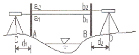
- 49.500m
- 49.964m
- 50.500m
- 52.146m
(정답률: 51%)
89. 트래버스 측량을 실시하는 주요 목적으로 옳은 것은?
- 방위각 계산
- 좌표의 결정
- 면적의 계산
- 방향의 결정
(정답률: 49%)
90. 그림과 같이 삼각측량을 실시하였다. 이 때 P점의 좌표는? (단, Ax= 81.847m, Ay= -30.460m, θAB= 163° 20′ 00″, ∠BAP = 60°, AP = 600.00m)
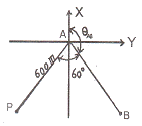
- Px = -354.577m, Py = -442.2⑤m
- Px = -466.884m, Py = -329.898m
- Px = -466.884m, Py = -442.2⑤m
- Px = -354.577m, Py = -329.898m
(정답률: 49%)
91. 삼각측량의 기선에 대한 설명으로 틀린 것은?
- 공공측량에서의 기선설치는 필수 요소이다.
- 기지점이 하나도 없는 경우는 기선을 설치한다.
- 기선의 위치선정은 부근 삼각점에 연결이 가능한 곳을 선정한다.
- 기선 확대는 1회 3~4배로 하고 횟수는 2회 정도로 한정한다.
(정답률: 41%)
92. 레벨을 점검하기 위해 그림과 같이 C점에 설치하여 A, B 양 표척의 값을 읽었다. 그리고 레벨을 BA 연장선 상의 D점에 세우고 A, B 양 표척의 값을 읽었다. 이 점검은 무엇을 알아보기 위한 것인가?
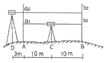
- 시준선과 연직선이 직교하는지의 여부
- 기포관축과 연직축이 수평하지의 여부
- 시준선과 기포관축이 직교하는지의 여부
- 시준선과 기포관축이 수평한지의 여부
(정답률: 38%)
93. 어느 지형도상에서 임의의 면적을 축척 1/1000 으로 측정하였더니 8000m2 이었다. 이 지형도의 실제 축척이 1:1500 이라면 면적은?
- 3555m2
- 5333m2
- 12000m2
- 18000m2
(정답률: 34%)
94. 어떤 다각형의 전측선장이 900m 이고 폐합비를 1/600로 한다면 축척 1:500 도상에서 허용 폐합오차는?
- 1㎜
- 3㎜
- 5㎜
- 10㎜
(정답률: 43%)
95. 1:50000 지형도에서 직각좌표의 주기는 몇 ㎞ 마다 표시하여야 하는가?
- 0.5㎞
- 1㎞
- 2㎞
- 4㎞
(정답률: 43%)
96. 모든 측량의 기초가 되는 공간정보를 제공하기 위하여 국토교통 부장관이 실시하는 측량을 무엇이라 하는가?
- 국가측량
- 기본측량
- 기초측량
- 공공측량
(정답률: 55%)
97. 국가기준점 중 지리학적 경위도, 직각좌표, 지구중심 직각좌표, 높이 및 중력 측정의 기준으로 사용하기 위하여 위성기준점, 수준점 및 중력점을 기초로 정한 기준점은?
- 위성기준점
- 중력점
- 통합기준점
- 삼각점
(정답률: 64%)
98. 측량성과 심사수탁기관이 지도 등의 심사를 할 때에 적정여부에 대한 심사사항이 아닌 것은?
- 도곽설정∙축척 및 투영
- 지형∙지물 및 지명의 표시
- 주기 및 기호표시
- 판매가격
(정답률: 66%)
99. 공공측량 작업계획서에 포함되어야 할 사항이 아닌 것은?
- 공공측량의 사업명
- 공공측량의 작업방법
- 공공측량의 성과심사 수탁기관
- 사용할 측량기기의 종류 및 성능
(정답률: 50%)
100. 무단으로 측량성과 또는 측량기록을 복제한 자에 대한 벌칙규정은?
- 1년 이하의 징역 또는 1천만원 이하의 벌금
- 2년 이하의 징역 또는 2천만원 이하의 벌금
- 3년 이하의 징역 또는 3천만원 이하의 벌금
- 300만원 이하의 과태료
(정답률: 39%)